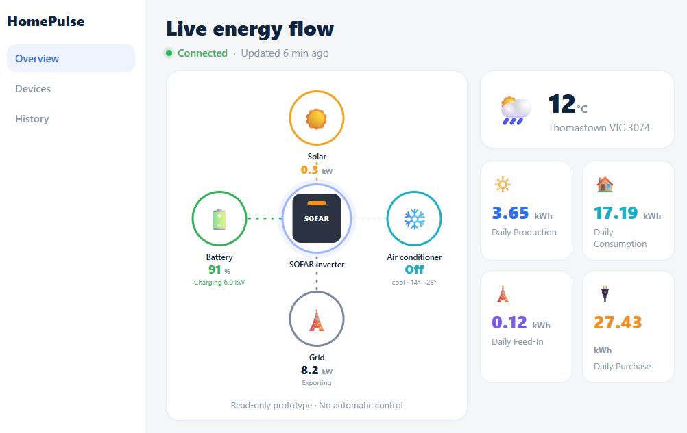
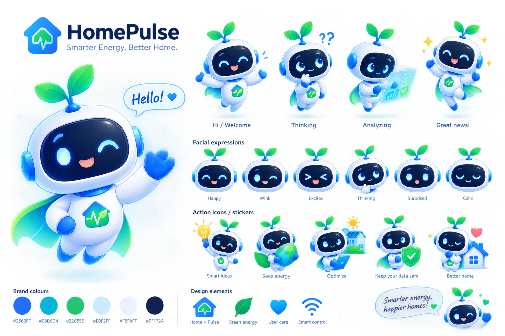
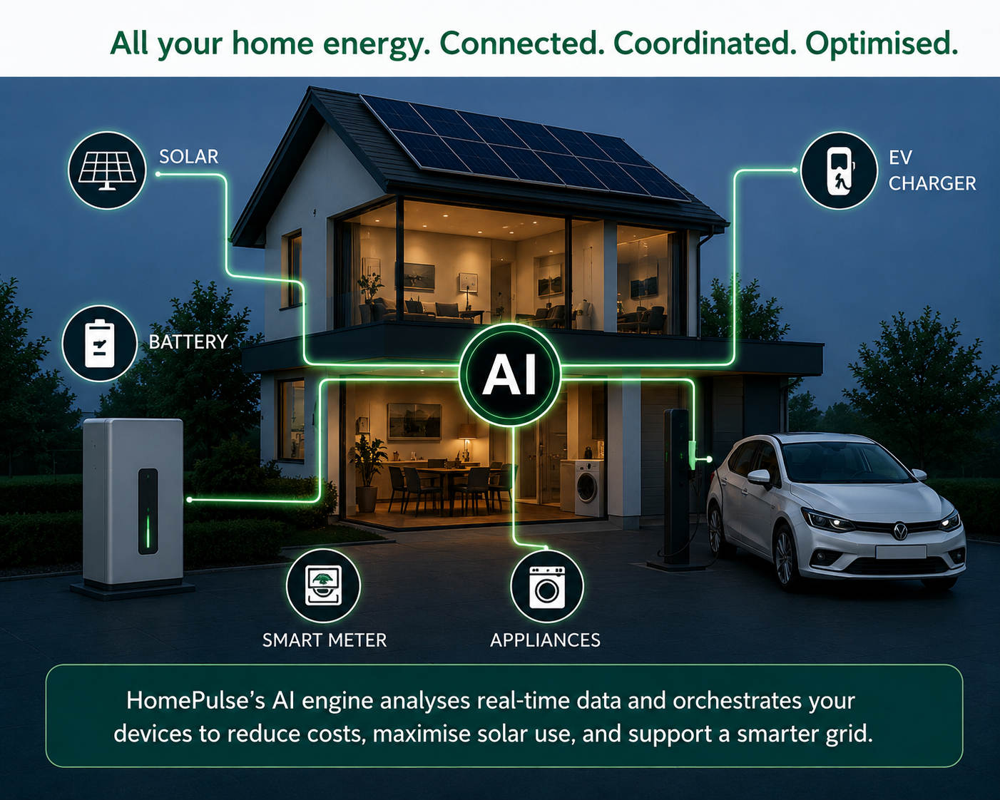
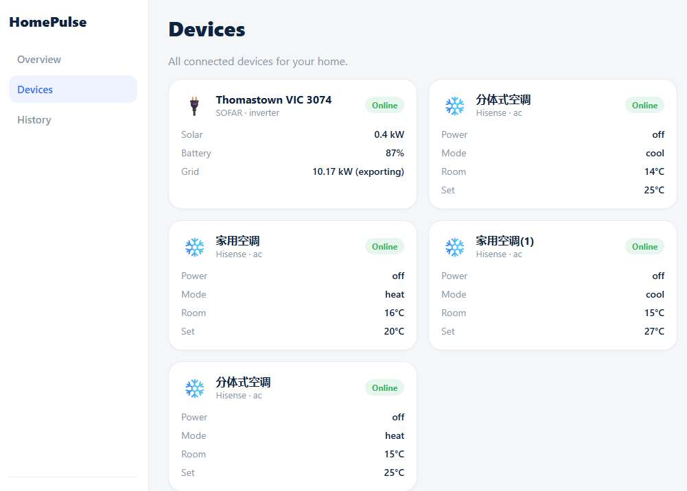
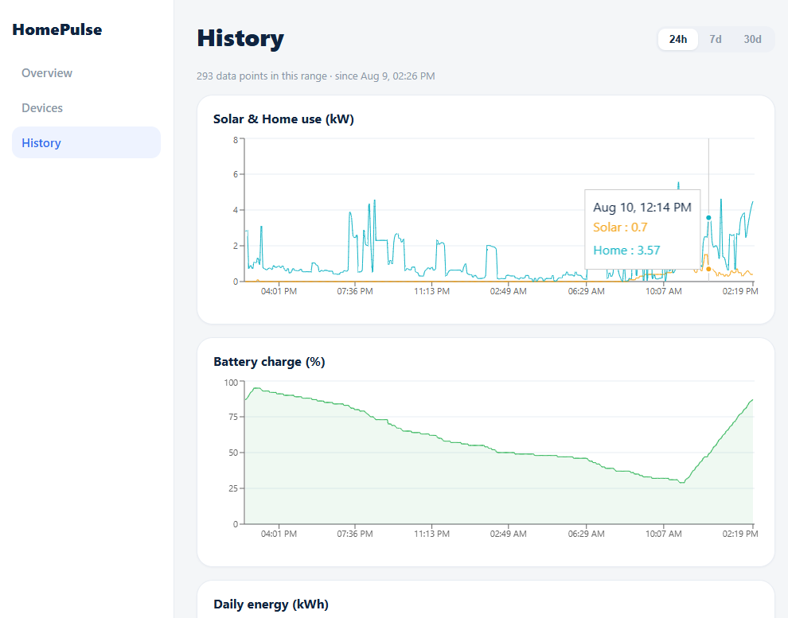
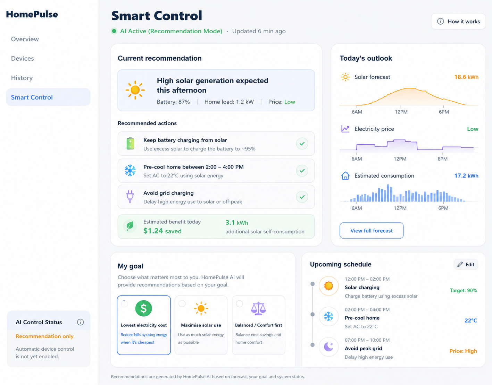

Whole-home orchestration
One intelligent layer above your home energy devices.
Solar. Battery. EV charger. Smart appliances. HomePulse connects the dots so the household can act as one coordinated system.
HomePulse brings solar, batteries, EVs and smart appliances into one intelligent home energy platform — helping households understand, coordinate and optimise how energy is used.

Solar. Battery. EV charger. Smart appliances. HomePulse connects the dots so the household can act as one coordinated system.
Our friendly AI guide is designed to explain recommendations, surface savings opportunities and keep users in control.

HomePulse is designed to turn fragmented apps and device data into a single household energy experience.
Solar, batteries, EV chargers and smart appliances are usually managed through separate vendor apps with different data models, permissions and control logic.
HomePulse starts with reliable visibility, then adds recommendations based on solar availability, battery state, tariffs and user preferences before progressing toward trusted, permissioned control.

Browse the real HomePulse MVP screens below. Current functionality is clearly separated from features that are still in development.
Live solar, battery, grid and appliance status in one household-level interface.

Cross-device visibility across inverter and smart air-conditioning platforms.

Historical production, household demand and battery state help reveal how the home behaves over time.

The next layer: recommendation mode first, then opt-in automated control where device permissions and safety requirements allow.
HomePulse follows a staged path from data integration to responsible intelligent control.
Integrate supported energy and appliance platforms through APIs.
Convert fragmented device data into one household energy view.
Use forecasts, tariffs, battery state and preferences to suggest better actions.
Progress to explicit, permissioned control with human override.
HomePulse is moving beyond concept validation into product, industry and user validation.
Multi-device integration, live household monitoring and historical data are already operating in the MVP.
HomePulse evolved through CSIRO ON Prime and received a Facilitator's Award recognising the team's progress and evolution. The team is now strengthening user testing, industry support and pilot pathways.
We welcome conversations with installers, device manufacturers, councils, energy-sector organisations and early household users.
HomePulse is bringing together expertise across residential energy installation, software, AI, commercialisation and community engagement.
Industry Mentor
Richard Wang, CEO, SUNNY Energy
Residential solar, battery and home energy installation
Whether you are a household, installer, technology partner, council or energy-sector organisation, we would be happy to connect.